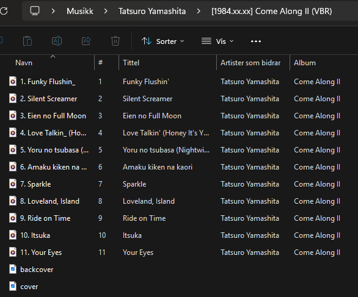
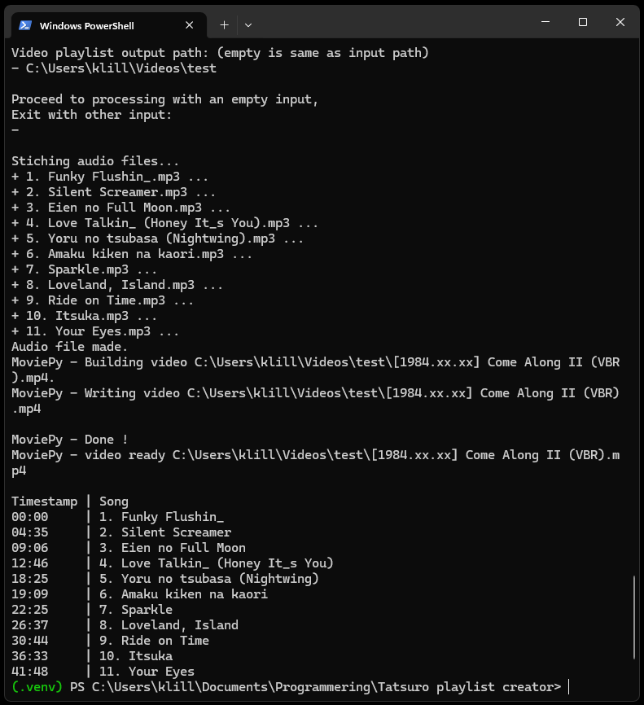
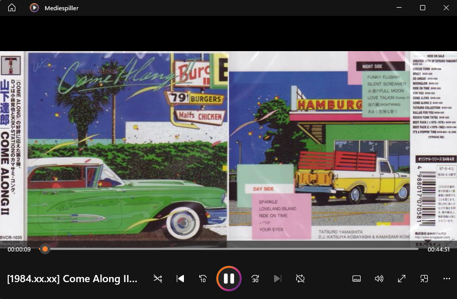

Tatsuro Yamashita er en artist som lager noe av favoritt musikken min. Men han er
ikke fan av strømmeplatformer og nekter derfor å dele musikken sin der.
For å kunne ha hans musikk lett tilgjengelig på tvers av stasjonær, bærbar, og
mobil lagde jeg dette python skriptet for å kunne laste opp musikken på YouTube
(oppført som privat).
Under er en spilleliste jeg lagde fullstending med skriptet.
Hvordan det virker
Aktiver det virtuelle miljøet, kjør skriptet, skriv inn sti for lydfiler og cover
bilde.


Velg om den skal lage en lang sammenhengende video eller flere individuelle.

Skriv inn utput sti og skriptet kjører i vei.

Slik ser videoen ut som blir lagd:
